Features
Piano From Above provides a simple yet robust user interface that allows you to learn the way you want
Playback modes
| Practice | Play | Learn |
| 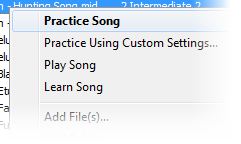 | 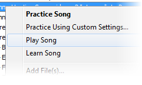 | 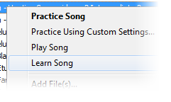 |
There are three main playback modes: Practice, Play, and Learn.
-
In Practice mode a song simply plays. You can set the speed of playback, the position of playback, which tracks are shown, and which tracks are muted.
Selecting Practice Using Custom Settings... enables you to set track specific settings before playback.
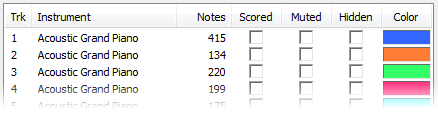
In Play mode, the environment is controlled. You cannot set the speed or position of playback, you cannot pause, and all tracks are muted (you are expected to produce the sound). In this mode, your playing is scored.
-
In Learn mode, learning is attempted to be made more efficient. There are two sub-modes: Waiting and Adaptive accessible through the Play menu. Tracks will be focused on one at a time so that you can learn each hand separately without having to manually configure.
-
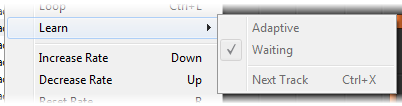
In Waiting mode, playback will pause while notes wait to be played.
In Adaptive mode, poorly played sections repeat at a slower rate.
Note that Play and Learn modes require a connected digital piano or keyboard.
Playback toolbar
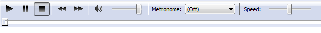The Playback toolbar allows you to control playback of the current MIDI file. Here you can set the speed, position, and volume of playback, toggle the playback state (playing, paused, stopped), and turn on a metronome.
Additional controls are provided in the Play menu. Through the play menu, you can also set a loop or change the Learn mode.
Library
| 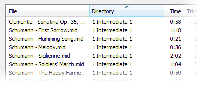 | 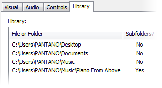 |
The Library is used for easy access to your MIDI files. The files and folders which make up the library are defined in the Library tab of the Preferences dialog (Options->Preferences...).
Note that use of the library is optional. An alternate path to opening a MIDI file is provided through the File menu.
View Menu
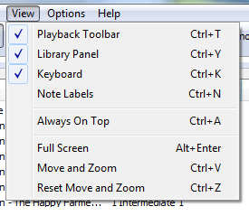The View menu allows you to choose what you want to see. You can toggle the library panel, the playback toolbar, the keyboard, and note labels.
The Move and Zoom functionality is designed for very small changes to the screen layout.
For example, if you want to set up Piano From Above with a projector, you would hide the keyboard, show full screen, change the background color to a light gray, and tune the final layout with Move and Zoom.
Note labels
| Automatic Labels | Manual Labels |
| 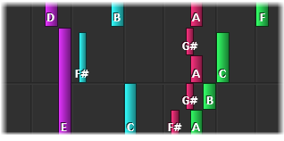 | 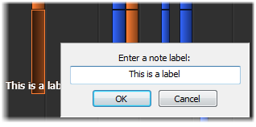 |
Automatic note labels are toggled on and off through the View menu.
Manual note labels are set by pausing playback and clicking on a note. Labels will be saved and restored if you switch songs or close Piano From Above.
Piano driven controls
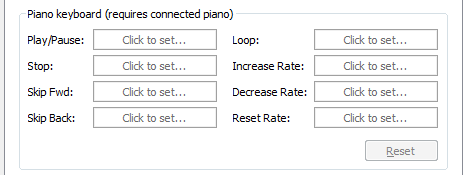Piano From Above allows you to control playback through your piano keyboard. This prevents you from having to go back and forth between the computer and the keyboard to make changes.
In the Controls tab of the Preferences dialog (Options->Preferences...), simply click on the command you want to set, and then play the note you want to use for the command.
Be sure to close a playing file before attempting this (File->Close File).
Future features
Look out for these features in future releases.
- Drag and drop file and folders onto the library
- Library search
- Online leaderboards
- Sheet music display
- Additional documentation